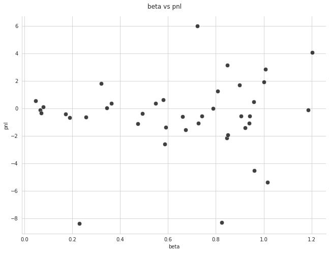
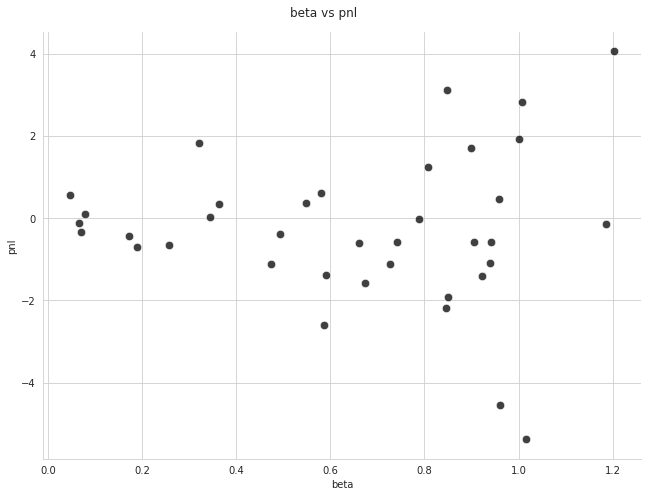
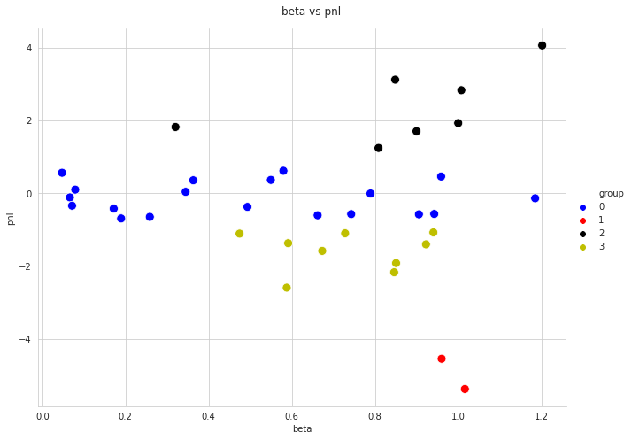
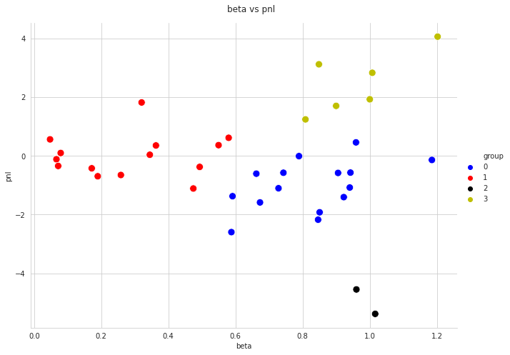
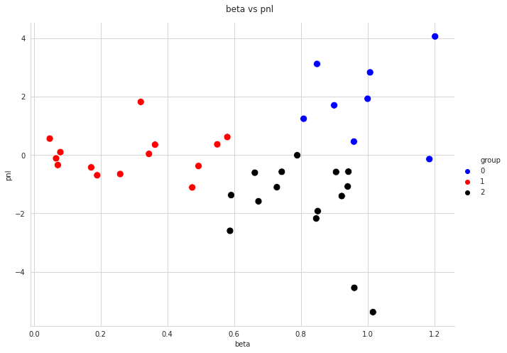

import pandas as pd
import numpy as np
import sklearn
import seaborn as sns
import matplotlib.pyplot as plt27 K-Means Clustering
K-means clustering is an unsupervised learning technique that groups collections of feature observations together into a pre-specified number of groups.
In this chapter we will perform k-means clustering to backtest data of a volatility trading strategy applied to various ETF underlyings. In particular, we will cluster the underlyings based on beta/pnl. In the related homework assignment, you will be asked to perform clustering by beta/stdev as well as stdev/pnl.
27.1 Importing Packages
Let’s begin by importing the packages that we will need.
27.2 Reading-In Data
Next let’s read-in our data, which consists of performance statistics of the various underlyings over the backtest period. In particular, we will be interested in:
- pnl - daily average pnl (multplied by 100)
- beta - the beta to the strategy applied to SPY (not SPY itself)
- stdev - the standard deviation of the daily PNLs.
df_cluster = pd.read_csv("strategy.csv")
df_cluster.head()| underlying | stdev | spy_stdev | corr_spy | beta | pnl | |
|---|---|---|---|---|---|---|
| 0 | DIA | 0.010383 | 0.014772 | 0.824586 | 0.579557 | 0.613557 |
| 1 | EEM | 0.025753 | 0.014772 | 0.550046 | 0.958898 | 0.457594 |
| 2 | EFA | 0.021988 | 0.014772 | 0.608328 | 0.905449 | -0.582501 |
| 3 | EMB | 0.005283 | 0.014772 | 0.185949 | 0.066495 | -0.117455 |
| 4 | EWH | 0.037914 | 0.014772 | 0.134310 | 0.344708 | 0.036128 |
We will also import some additional information about the universe of underlyings which we will find useful later in our analysis.
df_universe = df_cluster[['underlying']]
df = pd.read_csv('universe.csv')
df_universe = df_universe.merge(df, how='inner', on='underlying')
df_universe.head()| underlying | name | |
|---|---|---|
| 0 | DIA | SPDR DOW JONES INDL AVERAGE ET UT SER 1 |
| 1 | EEM | ISHARES TR MSCI EMG MKT ETF |
| 2 | EFA | ISHARES TR MSCI EAFE ETF |
| 3 | EMB | ISHARES TR JPMORGAN USD EMG |
| 4 | EWH | ISHARES INC MSCI HONG KG ETF |
27.3 Checking for Outliers
Let’s plot our data quickly in order to check for potential outliers.
with sns.axes_style('whitegrid'):
g = sns.relplot(
x='beta'
, y='pnl'
, data=df_cluster
, color = 'black'
, alpha = 0.75
, height=7
, aspect=1.3
, s=70
);
plt.subplots_adjust(top=0.93);
g.fig.suptitle('beta vs pnl');
27.4 Wrangling: Removing Outliers
There seem to be a few extreme data point, which is likely the result of bad data. Let’s write a query to isolate these.
df_cluster.query("pnl < -8 or pnl > 5")| underlying | stdev | spy_stdev | corr_spy | beta | pnl | |
|---|---|---|---|---|---|---|
| 13 | GDX | 0.061813 | 0.014772 | 0.197046 | 0.824502 | -8.315433 |
| 19 | SLV | 0.048230 | 0.014772 | 0.221409 | 0.722864 | 5.975203 |
| 23 | UNG | 0.082083 | 0.014772 | 0.041565 | 0.230951 | -8.397742 |
We can see that the offenders are GDX, SLV, and UNG. Let’s remove these manually now.
df_cluster = df_cluster[~df_cluster['underlying'].isin(['UNG', 'SLV', 'GDX'])].reset_index(drop=True)
df_cluster.head()| underlying | stdev | spy_stdev | corr_spy | beta | pnl | |
|---|---|---|---|---|---|---|
| 0 | DIA | 0.010383 | 0.014772 | 0.824586 | 0.579557 | 0.613557 |
| 1 | EEM | 0.025753 | 0.014772 | 0.550046 | 0.958898 | 0.457594 |
| 2 | EFA | 0.021988 | 0.014772 | 0.608328 | 0.905449 | -0.582501 |
| 3 | EMB | 0.005283 | 0.014772 | 0.185949 | 0.066495 | -0.117455 |
| 4 | EWH | 0.037914 | 0.014772 | 0.134310 | 0.344708 | 0.036128 |
Let’s regraph our cleaned data.
with sns.axes_style('whitegrid'):
g = sns.relplot(
x='beta'
, y='pnl'
, data=df_cluster
, color = 'black'
, alpha = 0.75
, height=7
, aspect=1.3
, s=70
);
plt.subplots_adjust(top=0.93);
g.fig.suptitle('beta vs pnl');
Discussion Question: Inspect the graph above and see if you can predict a K-means clustering based on four clusters.
Solution
#27.5 K-Means Clustering - First Try
We are now ready to fit our clustering model. We begin by importing the KMeans constructor.
from sklearn.cluster import KMeansNext, we will isolate the features we want to use for grouping.
X = df_cluster[['beta', 'pnl']]
X.head()| beta | pnl | |
|---|---|---|
| 0 | 0.579557 | 0.613557 |
| 1 | 0.958898 | 0.457594 |
| 2 | 0.905449 | -0.582501 |
| 3 | 0.066495 | -0.117455 |
| 4 | 0.344708 | 0.036128 |
We are now ready to fit our clustering model. I chose to use 4 groups in the hope that the groupings would align with the following categories:
- high beta, high pnl
- high beta, low pnl
- low beta, high pnl
- low beta, low pnl
kmeans = KMeans(n_clusters = 4, n_init=100, random_state=0)
kmeans.fit(X)KMeans(n_clusters=4, n_init=100, random_state=0)Let’s add a column to our original data frame that includes the group number.
df_cluster['group'] = kmeans.labels_
df_cluster['group'] = df_cluster['group'].apply(str)
df_cluster.sort_values('group').head()| underlying | stdev | spy_stdev | corr_spy | beta | pnl | group | |
|---|---|---|---|---|---|---|---|
| 0 | DIA | 0.010383 | 0.014772 | 0.824586 | 0.579557 | 0.613557 | 0 |
| 31 | XLU | 0.011834 | 0.014772 | 0.236587 | 0.189522 | -0.695763 | 0 |
| 30 | XLP | 0.009352 | 0.014772 | 0.408279 | 0.258476 | -0.653215 | 0 |
| 28 | XLI | 0.018132 | 0.014772 | 0.605048 | 0.742666 | -0.576125 | 0 |
| 27 | XLF | 0.031330 | 0.014772 | 0.444355 | 0.942399 | -0.571652 | 0 |
And now let’s graph our clustering with colors to show the grouping.
with sns.axes_style('whitegrid'):
sns.color_palette("Paired")
g = sns.relplot(
x='beta'
, y='pnl'
, data=df_cluster
, height=7
, aspect=1.3
, hue='group'
, palette=["b", "r", 'k', 'y']
, s=100
);
plt.subplots_adjust(top=0.93);
g.fig.suptitle('beta vs pnl');
Discussion Question: What are your observations about this clustering?
Solution
# The PNL feature is dominating the clustering because of scale.27.6 K-Means Clustering - Second Try
As we can see from the previous section, unless we perform scaling, the pnl feature will dominate because its values are an order of magnitude bigger than the beta feature.
So let’s scale and perform our analysis again.
from sklearn.preprocessing import scale
Xs = scale(X)
kmeans = KMeans(n_clusters = 4, n_init=100, random_state=0)
kmeans.fit(Xs)KMeans(n_clusters=4, n_init=100, random_state=0)df_cluster['group'] = kmeans.labels_
df_cluster['group'] = df_cluster['group'].apply(str)
df_cluster = df_cluster.sort_values(['group', 'underlying']).merge(df_universe)
df_cluster.head()| underlying | stdev | spy_stdev | corr_spy | beta | pnl | group | name | |
|---|---|---|---|---|---|---|---|---|
| 0 | EEM | 0.025753 | 0.014772 | 0.550046 | 0.958898 | 0.457594 | 0 | ISHARES TR MSCI EMG MKT ETF |
| 1 | EFA | 0.021988 | 0.014772 | 0.608328 | 0.905449 | -0.582501 | 0 | ISHARES TR MSCI EAFE ETF |
| 2 | EWJ | 0.025301 | 0.014772 | 0.343123 | 0.587681 | -2.597758 | 0 | ISHARES INC MSCI JPN ETF NEW |
| 3 | EWU | 0.050743 | 0.014772 | 0.268563 | 0.922505 | -1.406626 | 0 | ISHARES TR MSCI UK ETF NEW |
| 4 | EWW | 0.026251 | 0.014772 | 0.372520 | 0.661983 | -0.608147 | 0 | ISHARES INC MSCI MEXICO ETF |
And let’s graph our new grouping.
with sns.axes_style('whitegrid'):
sns.color_palette("Paired")
g = sns.relplot(
x='beta'
, y='pnl'
, data=df_cluster
, height=7
, aspect=1.3
, hue='group'
, palette=["b", "r", 'k', 'y']
, s=100
);
plt.subplots_adjust(top=0.93);
g.fig.suptitle('beta vs pnl');
Discussion Question: What are your observations about this grouping?
Solution
# group 0: high beta, zeroish pnl
# group 1: low beta, zeroish pnl
# group 2: extremely low performers
# group 3: high beta, high performers
# group 3 consists of: QQQ, SPY, IWM, USO, EWZ, FXI -- three of these are major stock indices, which is what I would expect
# group 0 contains 7 of the 11 SPDR sector select funds (X--), which makes sense based on what I know of the strategy
# group 0 also contains 5 emerging market related funds (E--), I don't have an opinion on this Code Challenge: Redo the clustering for 3 groups.
Solution
# fitting
X = df_cluster[['beta', 'pnl']]
Xs = scale(X)
kmeans = KMeans(n_clusters = 3, n_init=100, random_state=0)
kmeans.fit(Xs)
# adding labels to df_cluster
df_cluster['group'] = kmeans.labels_
df_cluster['group'] = df_cluster['group'].apply(str)
df_cluster.sort_values('group')
# graphing
with sns.axes_style('whitegrid'):
sns.color_palette("Paired")
g = sns.relplot(
x='beta'
, y='pnl'
, data=df_cluster
, height=7
, aspect=1.3
, hue='group'
, palette=["b", "r", 'k']
, s=100
);
plt.subplots_adjust(top=0.93);
g.fig.suptitle('beta vs pnl');